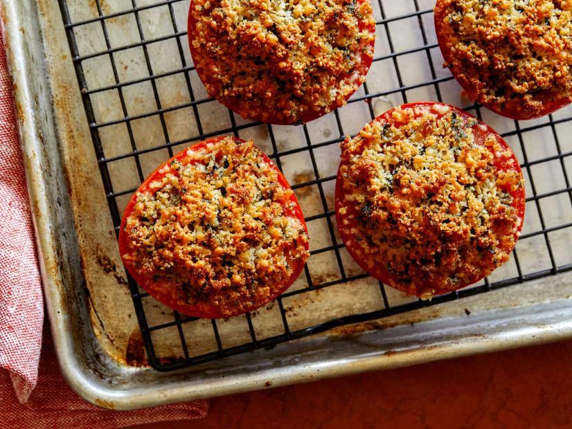

Stuffed Tomatoes

Homemade Delicious Stuffed Tomatoe Recipe
Ordinary tomatoes transformed into an extraordinary dinner dish!
These Stuffed Tomatoes
are filled with bread crumbs, Parmesan and fresh herbs, then covered
with mozzarella and baked. Easy, flavorful and delicious!
Ingredients
- 2 vine-ripened tomatoes
- Salt
- 1/2 cup bread crumbs
- 1 clove garlic, minced
- 1/4 cup finely chopped fresh basil leaves
- Freshly ground black pepper
- 1/2 cup grated Parmesan
- 1/4 cup olive oil
Steps
- Preheat oven to 400 degrees F.
- Slice tomatoes in half horizontally and scoop out pulp and seeds.
- Salt insides and rest upside down on a sheet pan lined with a wire rack to extract juices, about 15 minutes.
- Meanwhile, in a medium bowl, mix together bread crumbs, garlic, basil, pepper, 1/4 cup of the grated
Parmesan and oil.
- Stuff tomatoes with the filling, sprinkle with remaining Parmesan.
- Bake until tomatoes are cooked through and tops are golden brown, about 30 minutes.